6. 卷积神经网络¶
6.1. 整体结构¶
全连接神经网络中，Affine曾后面跟着激活函数ReLU层（或Sigmoid层）
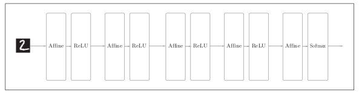CNN中新增了Convolution层和Pooling层
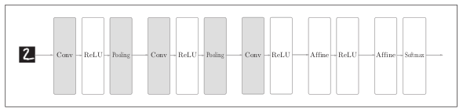
6.2. 卷积层¶
- 全连接层存在的问题
全连接层存在什么问题呢？那就是数据的形状被“忽视”了。比如，输入数据是图像时，图像通常是高，长，通道方向上的3维形状。但是全连接层输入时，需要将3维数据拉平为1维数据。
- 卷积运算
卷积运算相当于图像处理中的“滤波器运算”。
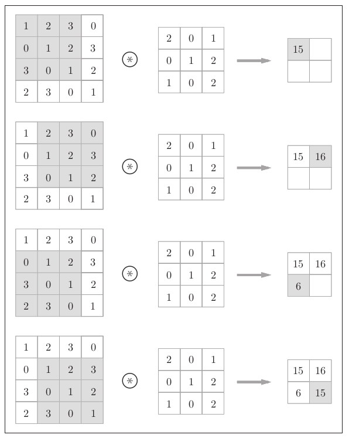 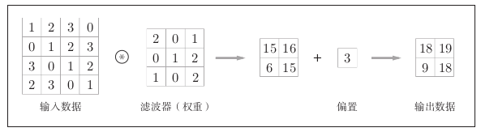
- 填充
在卷积运算之前，有时要向输入数据的周围填入固定的数据（比如0等），这称为填充。使用填充主要时为了调整输出的大小。因为每次进行卷积运算都会缩小空间，那么在某个时刻输出大小就有可能会变为1，导致无法再应用卷积运算。
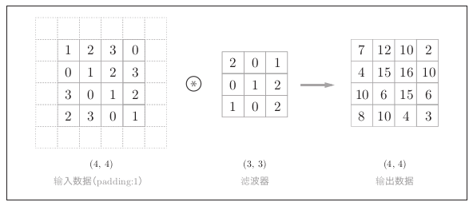
- 步幅
应用滤波器的位置间隔成为步幅(stride)。
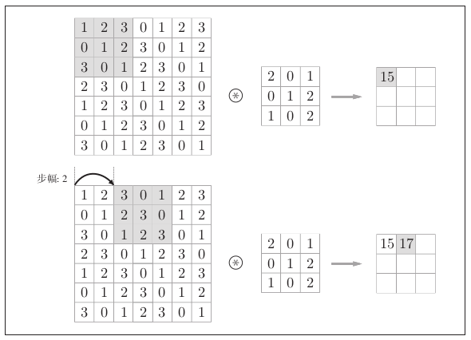假设输入大小为 \((H,W)\) ，滤波器的大小为 \((FH,FW)\) ，输出大小为 \((OH,OW)\) , 填充为 \(P\) ，步幅为 \(S\) ，此时输出大小可以通过下式计算：
\[\begin{split}OH = \frac{H + 2P -FH}{S} + 1\\ OW = \frac{H + 2P -FH}{S} + 1\end{split}\]
- 三维数据的卷积运算
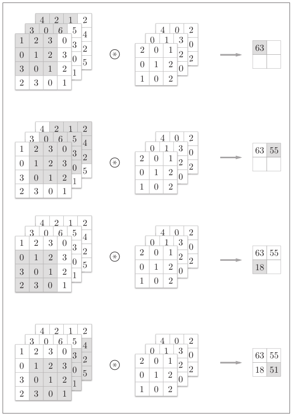将数据和滤波器结合长方体来考虑，3维数据的卷积运算会很容易理解。比如，通道数为C，高度为H，长度为W的数据形状可以写成(C, H, W)。
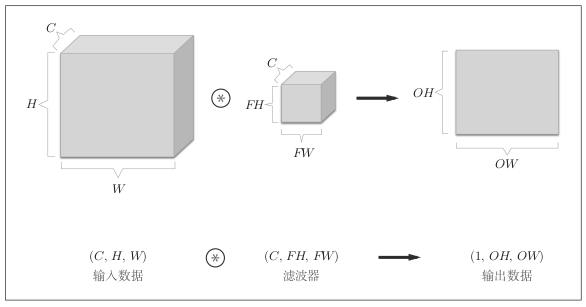
如果需要在通道方向上也拥有多个卷积运算的输出，就需要用到多个滤波器（权重）。用图表示如下：
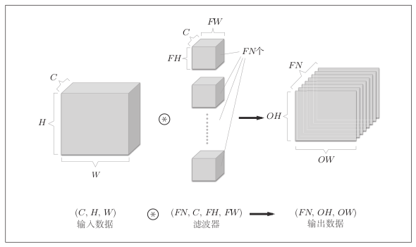
加偏置
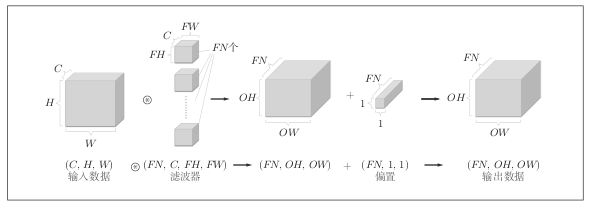
- 批处理
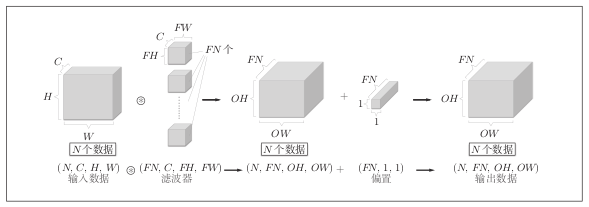
6.3. 池化层¶
池化是缩小高，长方向上的空间运算。下图为Max池化的处理顺序。
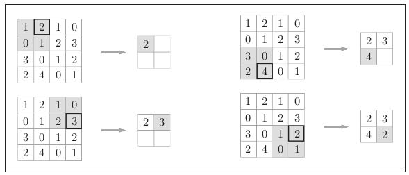除了Max池化外还有Average池化。Max是从目标区域中取出最大值，Average是计算目标区域中的平均值。
- 池化层的特征
- 没有要学习的参数
- 通道数不发生变化
- 对微小的位置变化具有鲁棒性
6.4. 卷积层和池化层的实现¶
- 基于im2col的展开
im2col这个名称是“image to column”的缩写，对于输入数据，im2col将应用滤波器的区域横向展开为1列。
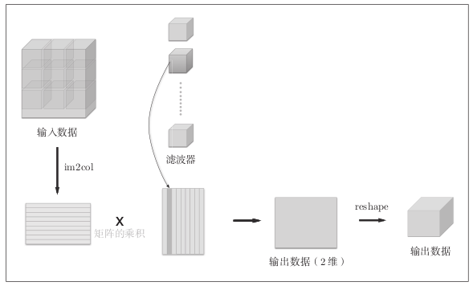卷积运算的滤波器处理细节：将滤波器纵向展开为1列，并计算和im2col展开的数据的矩阵乘积，最后转换(reshape)为输出数据的大小。
- 卷积层的实现
class Convolution: def __init__(self, W, b, stride=1, pad=0): self.W = W self.b = b self.stride = stride self.pad = pad def forward(self, x): FN, C, FH, FW = self.W.shape N, C, H, W = x.shape out_h = int(1 + (H + 2*self.pad - FH) / self.stride) out_w = int(1 + (W + 2*self.pad - FW) / self.stride) col = im2col(x, FH, FW, self.stride, self.pad) col_w = self.W.reshape(FN, -1).T # 滤波器的展开 out = np.dot(col, col_w) + self.b out = out.reshape(N, out_h, out_w, -1).transpose(0, 3, 1, 2) return out
- 池化层的实现
池化层的实现和卷积层相同，都使用im2col展开数据。不过，池化的情况下，在通道方向上是独立的，这点和卷积层不同。
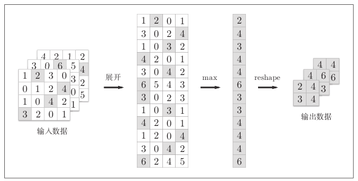class Pooling: def __init__(self, pool_h, pool_w, stride=1, pad=0): self.pool_h = pool_h self.pool_w = pool_w self.stride = stride self.pad = pad def forward(self, x): N, C, H, W = x.shape out_h = int(1 + (H - self.pool_h) / self.stride) out_w = int(1 + (W - self.pool_w) / self.stride) # 展开 col = im2col(x, self.pool_h, self.pool_w, self.stride, self.pad) col = col.reshape(-1, self.pool_h*self.pool_w) # 最大值 out = np.max(col, axis=1) # 转换 out = out.reshape(N, out_h, out_w, C).transpose(0, 3, 1,2) return out
6.5. CNN的实现¶
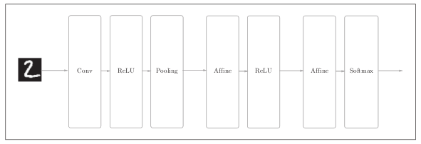class SimpleConvNet: def __init__(self, input_dim=(1, 28, 28), conv_param={'filter_num':30, 'filter_size':5, 'pad':0, 'stride':1}, hidden_size=100, output_size=10, weight_init_std=0.01): filter_num = conv_param['filter_num'] filter_size = conv_param['filter_size'] filter_pad = conv_param['pad'] filter_stride = conv_param['stride'] input_size = input_dim[1] conv_output_size = (input_size - filter_size + 2*filter_pad) / \ filter_stride +1 pool_output_size = int(filter_num * (conv_output_size/2) * (conv_output_size/2)) self.params = {} self.params['W1'] = weight_init_std * \ np.random.randn(filter_num, input_dim[0], filter_size, filter_size) self.params['b1'] = np.zeros(filter_num) self.params['W2'] = weight_init_std * \ np.random.randn(pool_output_size, hidden_size) self.params['b2'] = np.zeros(hidden_size) self.params['W3'] = weight_init_std * \ np.random.randn(hidden_size, output_size) self.params['b3'] = np.zeros(output_size) self.layers = OrderedDict() self.layers['Conv1'] = Convolution(self.params['W1'], self.params['b1'], self.params['stride'], self.params['pad']) self.layers['Relu1'] = Relu() self.layers['Pool1'] = Pooling(pool_h=2, pool_w=2, stride=2) self.layers['Affine1'] = Affine(self.params['W2'], self.params['b2']) self.layers['Relu2'] = Relu() self.layers['Affine2'] = Affine(self.params['W3'], self.params['b3']) self.last_layer = softmaxwithloss() def predict(self, x): for layer in self.layers.values(): x = layer.forward(x) return x def loss(self, x, t): y = self.predict(x) return self.lastLayer.forward(y, t) def gradient(self, x, t): # forward self.loss(x, t) # backward dout = 1 dout = self.lastLayer.backward(dout) layers = list(self.layers.values()) layers.reverse() for layer in layers: dout = layer.backward(dout) # 设定 grads = {} grads['W1'] = self.layers['Conv1'].dW grads['b1'] = self.layers['Conv1'].db grads['W2'] = self.layers['Affine1'].dW grads['b2'] = self.layers['Affine1'].db grads['W3'] = self.layers['Affine2'].dW grads['b3'] = self.layers['Affine2'].db
6.6. 具有代表性的CNN¶
- LeNet
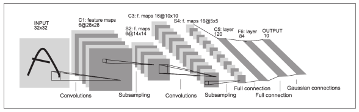和“现在的CNN”相比，LeNet中使用sigmoid函数，而现在的CNN中主要使用ReLU函数。此外，原始的LeNet中使用子采样(subsampling)缩小中间数据的大小，而现在的CNN中Max池化是主流。
- AlexNet
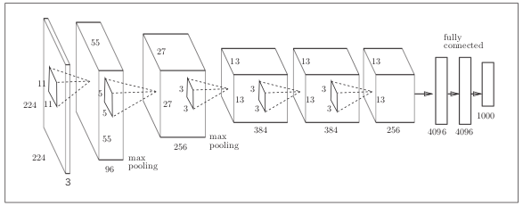AlexNet叠有多个卷积层和池化层，最后经由全连接层输出结果。虽然结构上AlexNet和LeNet没有大的不同，但有以下几点差异：
- 激活函数使用ReLU
- 使用进行局部正规化的LRN(Local Response Normalization)层
- 使用Rropout